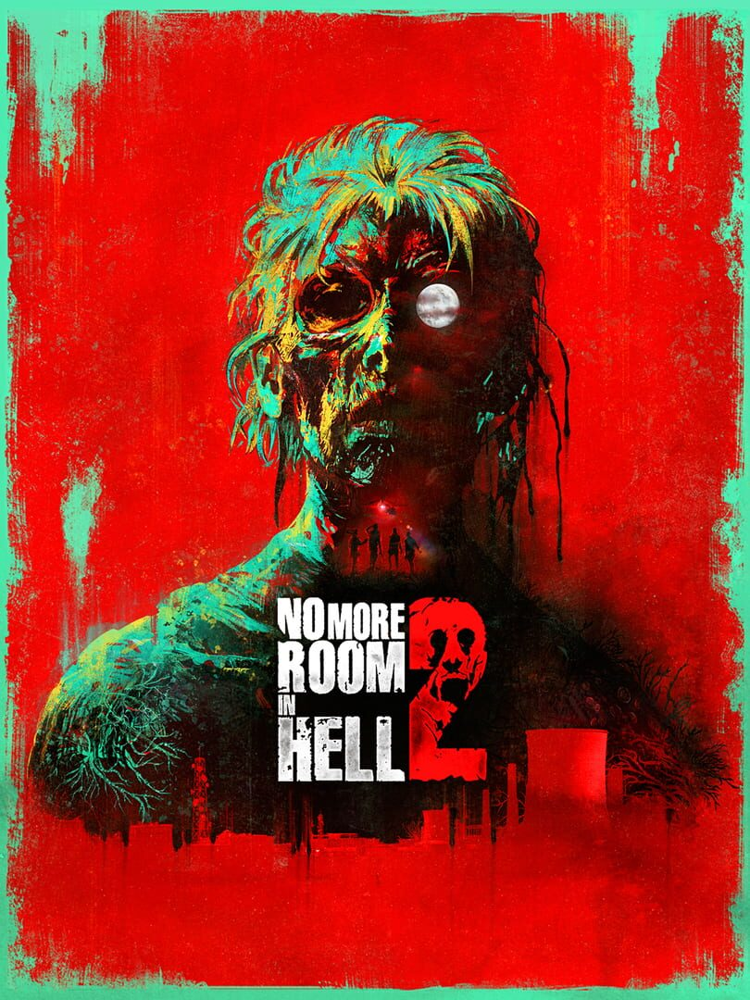

No More Room in Hell 2
No More Room in Hell 2
Details
|  | |
| Playtime | Not Played |
| Last Activity | Never |
| Added | 2025-05-01 22:05:34 |
| Modified | 2025-05-01 22:05:46 |
| Completion Status | Abandoned |
| Library | Steam |
| Source | Steam |
| Platform | PC (Windows) |
| Release Date | 2024-10-22 |
| Community Score | |
| Critic Score | |
| User Score | |
| Genre | Indie Shooter |
| Developer | Torn Banner Studios |
| Publisher | Torn Banner Studios |
| Feature | Co-Operative Multiplayer |
| Links | Steam Official Epic Discord Twitch YouTube Wikia Wikipedia |
| Tag | |
Description

No More Room in Hell 2 is an intense & terrifying permadeath co-op journey into the eerie darkness of zombie-infested zones. As an emergency responder you must survive, scavenge, stockpile and fulfill your mission - then repeat, each time in an ever-changing experience. Beware - one bite can end it all, starting the ticking timebomb of undead infection within you.
INTENSE 8 PLAYER CO OP

Eight co-op players spawn separately across various maps, deploying their wits and deadly reflexes to unite & survive against the unstoppable forces of the undead. Players must communicate and strategize to survive, with danger lurking in every shadow. Carve your path through the horde with combat - or cunning.
There are multiple ways to tackle any scenario, but character permadeath creates huge consequences for every bad decision, as the undead react to every move and noise you make. Draw foes away with a car alarm, lead them directly into the teeth of a trap, or go with a more forceful approach of explosive action.
MULTIPLE DIVERSE MAPS

Find your way to your teammates with proximity voice chat and grow together in power. Each match, you’ll go from shaking solo in the darkness with only a beer bottle, to forming a fully stocked co-op squad with assault rifles and explosives. An ever-present threat remains: if a responder dies, all of their progress is lost.
Witness the apocalypse unfolding across 3 richly crafted maps (with more to come):
- Lewiston, an urban map where players work to secure the safety of survivors across a ravaged city at golden sunset.
- Power Plant, set at the outskirts of a massive map in rural Pennsylvania at midnight.
- Pottsville, a brooding suburban town full of claustrophobic encounters with the undead at dawn.
Locate co-op allies, then gather weapons & equipment to survive the rising threat, moving your squad towards each map’s finale.
Objectives unfold as iconic horror movie scenes at abandoned gas stations, bars, military checkpoints and more, as you earn better gear to increase your odds of survival and restore infrastructure to keep humanity alive.
PERMADEATH AND INFECTION

Every mission puts your character at risk of dying - forever.
The undead can infect you, setting you on a race against time to find pills or a gene therapy cure - before your dead body rises up against your allies.
Looting supplies levels up your responder, so long as they survive a mission. With every run you improve your chances for survival with access to equipment caches and starting gear.
Do you put your character’s life on the line to save a squad member? Rewards increase as more squadmates extract, but the risks of permadeath are ever-present.
This is co-op with consequences.
ENDLESSLY REPLAYABLE HORROR

No More Room in Hell 2 is a visceral & human horror experience - where the rotting undead were once real people.
One zombie is a threat. A crowd of zombies will tear you apart. The undead not only see you, they can hear you, each other, and every deafening sound you trigger in the hushed darkness.
Multiple zombie types and an ever present darkness keeps you always one step away from a horrifying end - including your responder joining the undead horde.
MELEE, RANGED AND TACTICAL WEAPONS

Ammo is scarce (at first), zombies are dangerous, and players are fragile. Experience thrilling survival horror with an arsenal of weapons - some professional, some improvised - to ward off and outwit the undead.
Bury a crowbar into a walker’s skull with visceral melee combat, or unload your last shotgun shell into the advancing horde. A dynamic gore system lets you see and feel the sickening impact of every wound you impart on the undead.
Stay alive by planning out your combat encounters, using tools like proximity bombs to employ brains instead of brawn.
Equip weapon attachments including sights, scopes and suppressors, and build a Loadout for your permadeath character over multiple missions.
Do whatever you can to make it out alive.